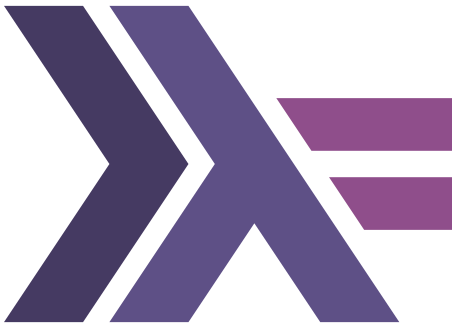
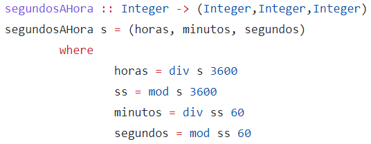

Símbolos
Operadores
Uno de los símbolos que integra Haskell son de los operadores, cadenas de símbolos escogidos entre:
!, #, $, %, &, *, +, -, ., /, <, = , > , ? , @ , \ , :,... ,...
Ejemplo:
+!+, <&, <=>,...
Si queremos utilizar el operador como constructor de datos, debe empezar por: ';'
Todos los valores de Haskell son de primera categoría ("first-class") ---pueden ser argumentos o resultados de funciones, o pueden ser ubicados en estructuras de datos, etc. Por otro lado, los tipos de Haskell no son de primera categoría. En cierto sentido, los tipos describen valores, y la asociación de un valor con su tipo se llama un tipificado (typing). Podemos escribir "tipificaciones" como los siguientes:
5 :: Integer
'a' :: Char
inc :: Integer -> Integer
[1,2,3] :: [Integer]
('b',4) :: (Char,Integer)
El símbolo "::" puede leerse "tiene el tipo".
Sintaxis
A diferencia de los operadores, las funciones se utilizan en notación prefija, es decir, el nombre de la función se coloca antes de sus parámetros. Los nombres de las funciones sólo pueden contener caracteres normales, es decir, letras, dígitos, comillas y subrayados. El primer carácter de un identificador de función no puede ser una letra mayúscula ni un dígito.
También es posible aplicar parcialmente una función, sin suministrarle todos sus parámetros. Esto genera una nueva función, que puede utilizarse como otra función cualquiera. Esta facilidad es especialmente útil en presencia de orden superior.
La siguiente lista se muestra los tipos, funciones y operadores que conforman el ecosistema de sintaxis del lenguaje Haskell:
Haskell es un lenguaje funcional puro, no estricto y fuertemente tipificado.
- Puro = transparencia referencial:
- No estricto = usa un orden no aplicativo (Evaluación perezosa).
- Tipificación fuerte = los elementos del lenguaje utilizables están clasificados en distintas categorías o tipos.
Un programa consiste en definiciones de funciones:
- Declararla: indicar el tipo
- Definirla: dar el método de computo.
Los principales tipos de datos básicos predefinidos en Haskell son: Char, Int, Integer, Float, Double y Bool.
Un ejemplo escrito con esta sintaxis es la siguiente:
Calcula el siguiente entero al argumento
sucesor :: Integer → Integer
sucesor x = x + 1
Calcula la suma de los cuadrados de sus dos argumentos
sumaCuadrados :: Integer → Integer → Integer
sumaCuadrados x y = x ∗ x + y ∗ y
Con estos ejemplos se puede notar la diferencia de sintaxis a comparación con otros lenguajes de programación.
Esqueleto de los programas
La estructura de un programa de haskell es sorprendentemente simple. Tienes un main función que hace IO, y eso es todo. Así que lo básico:
module Main where
addition a b = a + b
main :: IO ()
main = do let z = addition 5 3
ㅤㅤㅤㅤㅤㅤputStrLn $ "The result is: " ++ show z
Ahora puedes compilar esto en un simple programa usando algo como:
ghc --make Main.hs -o program
y debería producir un ejecutable llamado programa.
Aplicación a descargar para editar y ejecutar
GHC (Glasgow Haskell Compiler) es un compilador de Haskell. El compilador es de libre distribución, y existen versiones gratuitas para distintos sistemas operativos. La web principal del compilador contiene las distintas versiones del mismo, así como la documentación de instalación y uso.

GHC
Paradigma
Este lenguaje se ha convertido en uno de los lenguajes más populares en el campo de la Inteligencia Artificial. Sin embargo, para que el lenguaje fuese práctico, fue necesario incluir características propias de los lenguajes imperativos como la asignación destructiva y los efectos laterales que lo alejaron del paradigma funcional.
Ejemplo
Dada una cantidad de segundos, devuelve la cantidad de horas, minutos y segundos
